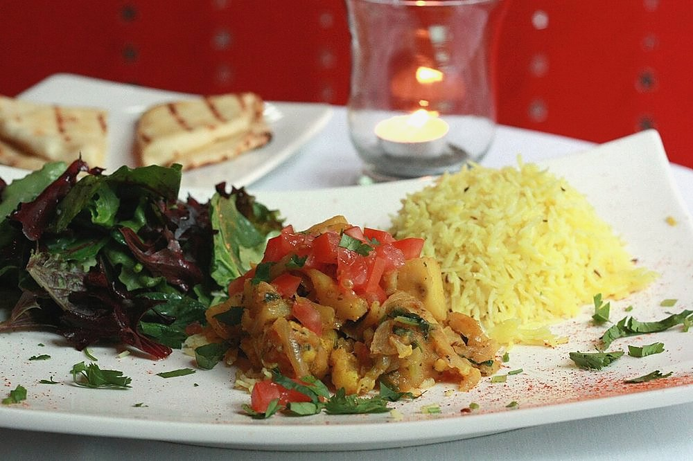

Prep15 min
Cook30 min
Total45 min
Serves4
Difficultyeasy
Allergens: none of the common ones
Ingredients
Quantities for 4.
- 600g baby potatoes, unpeeled Potatosmall ones, roughly equal in size
- 20 cloves, crushed to a coarse paste Garlic
- 2 tbsp powder Kashmiri Chillifor the red colour without the burn
- 1 tsp Chilli Powder
- 1 tbsp Coriander Powder
- 1 tsp Cumin Powder
- 1/2 tsp Turmeric
- 5 tbsp Groundnut Oil
- 1 tsp Cumin Seeds
- 1/4 tsp Asafoetidause compounded-free hing to keep this gluten-free
- 1 tbsp, coarsely ground Sesamethickens the masala and gives it body
- 2, slit Green Chilli
- to taste Salt
- 150ml Water
- 1 tbsp juice Lemonoptional
- 4 tbsp, chopped Coriander Leavesoptional
Cookware
stovetop, kadhai, pressure cooker
Before you start
- Boil the potatoes ahead: 3 whistles in a pressure cooker or 15 minutes in salted water, until a knife slides in with slight resistance. They finish cooking in the masala.
- Crush rather than slice the boiled potatoes — press each one with your palm until it splits. The rough surfaces hold masala the way a cut face never will.
- Mix the ground spices into 4 tbsp water to a paste before they go in the pan; dry powder scorches in hot oil in seconds.
Method
- Boil the baby potatoes until just tender, drain and cool 10 minutes.
- Press each potato with the flat of your palm until the skin splits and it flattens slightly. Leave the skins on.Split, not mashed. You want craggy edges, not puree.
- Heat the oil in a kadhai, crackle the cumin seeds, add the asafoetida and the crushed garlic.
- Fry the garlic over medium-low heat for 3-4 minutes until it turns pale gold and the raw edge goes.Pale gold only. Browned garlic turns the whole dish bitter and there is a lot of it here.
- Stir in the spice paste and the ground sesame and cook 2 minutes until the oil rises red around the edges.
- Add the crushed potatoes and slit green chillies and turn them through the masala until every piece is coated.
- Pour in the water, season with salt, cover and simmer on low for 10-12 minutes, shaking the pan occasionally.
- Uncover and cook 4-5 minutes more until the gravy clings thickly to the potatoes and pools of red oil sit on top.That surfacing oil is the finish line. Stop before it and the masala tastes raw.
- Finish with lemon juice and coriander and serve with bajra rotlo or plain khichdi.
Storage
Keeps 3 days refrigerated and tastes better on day two. Reheat in a pan with 2 tbsp water over low heat; the potatoes turn mealy in a microwave.
Nutrition Good estimate
| Per serving234 g | Per 100 g | |
|---|---|---|
| Calories | 339 kcal | 145 kcal |
| Protein | 6.4 g | 2.7 g |
| Carbohydrate | 38.9 g | 16.7 g |
| of which sugars | 3.2 g | 1.4 g |
| Fibre | 6.7 g | 2.9 g |
| Fat | 19.6 g | 8.4 g |
| of which saturated | 3.2 g | 1.4 g |
| of which unsaturated | 15.3 g | 6.6 g |
Worked out from the listed quantities; most of the ingredient list could be weighed. Some ingredients have no exact match in the nutrient database and use the nearest equivalent: asafoetida. Estimated from raw ingredients using USDA FoodData Central. Cooking changes are not modelled, and added salt is excluded, so sodium is not given.
Recipe v1.0.0, last updated 2026-07-31. Curated for Khaana and kept under version control.